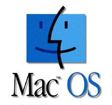

OS X, antes llamado Mac OS X, es un entorno operativo basado en Unix, desarrollado, comercializado y vendido por Apple Inc. Ha sido incluido en su gama de computadoras Macintosh desde el año de 2002. OS X es el sucesor del Mac OS 9 (la versión final del Mac OS Classic), el sistema operativo de Apple desde 1984. Está basado en BSD, y se construyó sobre las tecnologías desarrolladas en NeXT entre la segunda mitad de los 80's y finales de 1996, cuando Apple adquirió esta compañía. Técnicamente, no es un sistema operativo, sino que incluye uno (Darwin, cuyo núcleo es XNU). Desde la versión Mac OS X 10.5 Leopard para procesadores Intel, el sistema tiene la certificación UNIX 03.
La primera versión del sistema fue Mac OS X Server 1.0 en 1999, y en cuanto al escritorio, fue Mac OS X v10.0 "Cheetah" (publicada el 24 de marzo de 2001). Para dispositivos móviles Apple produce una versión específica de OS X llamada iOS, que funciona en iPhone, iPod Touch, iPad y Apple TV.